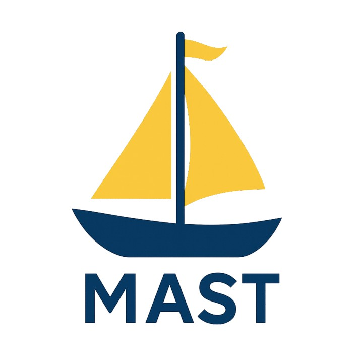
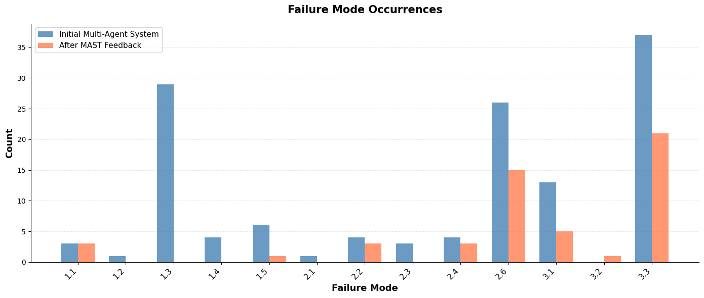
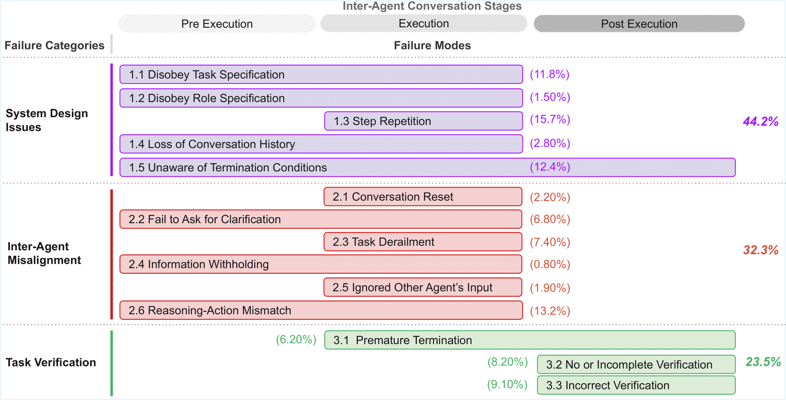
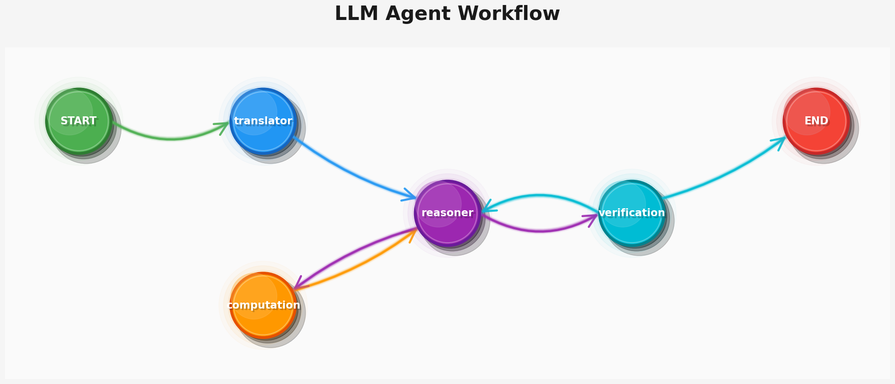
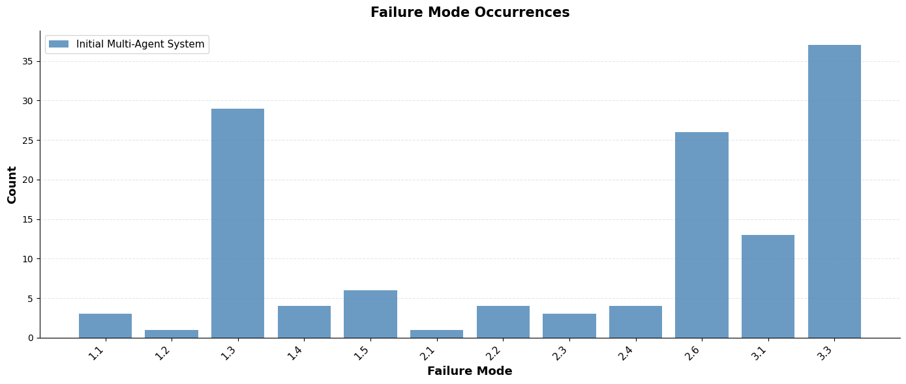
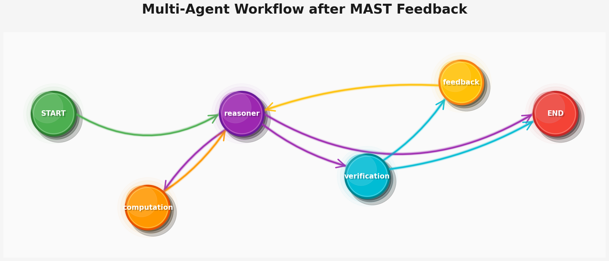

MAST tutorial
How to Use MAST to Improve Your Agents
November 2025

TLDR:
- Build your agentic AI system however you need: with multiple LLM calls interacting with each other, using tools, and operating within your desired environments.
- Measure more than just final “accuracy”: use MAST to identify the specific failure modes in your system.
- Improve your agentic system by addressing the errors identified by MAST, for example, by adding missing agents to patch failure modes, removing agents that do not contribute to the workflow, modifying the connectivity (edges) between agents, or adjusting the roles and prompts of different agents.
Starting to annotate your agentic traces with MAST as easy as:
!pip install agentdash
from agentdash import annotator
openai_api_key = "your-api-key"
MASTAnnotator = annotator(openai_api_key, model="gpt-5")
trace = """
Agent1: I need to calculate the sum of 1 + 1.
Agent2: I'll help you with that. The answer is 3.
Agent1: Thank you! Task completed.
"""
mast_annotation = MASTAnnotator.produce_taxonomy(trace)
In the example we discuss later, we show how the feedback provided by MAST annotator helps us replace a redundant agent with a key missing one and introduce better memory management by making agents stateful. These changes reduce failure modes significantly and improve downstream task performance by 53% compared to the initial design, while keeping the underlying LLM the same.

Challenge: Building and Iterating on Agentic Systems
Teams are racing to build agentic AI systems, with workflows that call tools, spawn subtasks, and verify results. The promise is real; the pain is, too... In practice, most projects stall not because the models are “too weak,” but because the development loop is fragile. Traces balloon into thousands of tokens across roles and tool calls. Reading logs by hand to spot the actual failure pattern (role drift vs. missed clarification vs. weak verification) rarely scales beyond a few runs. Without structured traces and consistent post-hoc analysis, you can’t reproduce defects or reliably evaluate improvements.
A 2025 MIT study describes a “GenAI Divide,” estimating that ~95% of enterprise AI pilots fail to reach impactful production, largely due to integration and workflow fit, not raw model capability. The report cites only ~5% of custom tools making it to durable implementation, with extensive qualitative evidence from interviews; news coverage echoes the same pattern.
This is why automating the debugging and the development loop is vital. You need a fast way to turn execution traces into actionable signals that tell you what to change next without developers spending days to spelunk logs.

What is MAST (and why use it)?
MAST is the Multi-Agent System Failure Taxonomy derived from 1600+ annotated traces across 7 MAS frameworks (coding, math, and general agents). MAST annotates each trace with a failure-mode vector (booleans per mode), grouped into:
- FC1 — System Design Issues (e.g., disobeying task/role spec, step repetition, context loss)
- FC2 — Inter-Agent Misalignment (e.g., ignored input, missing clarifications, derailment)
- FC3 — Task Verification (e.g., no/incomplete/incorrect verification; premature termination)
You get immediate, actionable signals to decide what to fix next (spec vs comms vs verification), rather than guessing.
Case Study: Build a Minimal MAS with LangGraph and Improve it with MAST
Here we demonstrate how to use MAST on a simple math agent workflow in LangGraph. In the main paper we also have demonstrations on improving 2 popular realistic multi-agent systems, AG2 and ChatDev.
We’ll assemble four agents: translator → reasoner ↔ computation → verification. The reasoner orchestrates; the verifier is the only one allowed to say FINAL ANSWER.

Step 0: Setup
pip install -U langchain langgraph langchain-openai datasets python-dotenv
Setup your OpenAI API Key:
export OPENAI_API_KEY="sk-..."
Step 1: Plumbing: prompts, LLM, routing helpers
In this example, we will use the LangChain framework to build our agents. Before we jump into the full graph, we’ll do a bit of plumbing to import the necessary utils and setup some helper functions:
First, we need to load the OpenAI API key and spin up a shared ChatOpenAI client.
Second, we will define a reusable system prompt template that we will later tweak and customize for different agents in the system.
Finally, we need to add a small routing helper that decided where to go next based on whether a message contains a final answer or it needs verification. This will help facilitate the transition of turns between different nodes (agents) in our network of agents.
import os, getpass
from dotenv import load_dotenv
load_dotenv()
if not os.environ.get("OPENAI_API_KEY"):
os.environ["OPENAI_API_KEY"] = getpass.getpass("Please provide your OPENAI_API_KEY: ")
from typing import Literal
from langchain_core.messages import BaseMessage, HumanMessage
from langchain_openai import ChatOpenAI
from langgraph.prebuilt import create_react_agent
from langgraph.graph import MessagesState, END
llm = ChatOpenAI(model="gpt-4o")
def make_system_prompt(suffix: str) -> str:
return (
"You are a helpful AI assistant, collaborating with other assistants."
" Use tools when helpful. Make incremental progress."
" Do NOT include 'FINAL ANSWER' unless you are the verification agent."
f"\n{suffix}"
)
def get_next_node(last_message: BaseMessage, primary: str, default: str | None = None):
text = last_message.content or ""
if "FINAL ANSWER" in text:
return END
if "VERIFICATION" in text:
return default
return primary
Step 2: Agents
Now let us build a multi-agent system with 4 agents to solve mathematical reasoning problems (shown in Figure 3). This constraint on the number of agents will both help us keep this experiment minimal and later on help us show under such a budget, the effect of replacing a redundant agent with another one that is vital to our system.
First, we introduce a translator agent that takes in the mathematical reasoning problem, elaborates on it, cleans it up by extracting the underlying mathematical optimization program, and passes it to the other agents. Second, we use a reasoner agent that analyzes the problem and produces a structured solution. Third, we include a computation agent responsible for carrying out all mathematical computations and calculations. Finally, we add a verification agent that is connected to the reasoner agent, provides feedback on the correctness of the solutions, and finalizes the answer once it is satisfied.
The dependencies and edges between different agents will be captured by the get_next_node helper function that we defined above and compiled together by wiring the graph which we will do at Step 3.
# Translator: normalize the problem statement
translator = create_react_agent(
llm, tools=[], prompt=make_system_prompt(
"You are the translator agent. Convert natural language Olympiad problems into clean, math-only text. "
"Do NOT solve. If already clean, hand off to the reasoner."
),
)
def translator_node(state: MessagesState):
result = translator.invoke(state)
goto = get_next_node(result["messages"][-1], "reasoner")
result["messages"][-1] = HumanMessage(content=result["messages"][-1].content, name="translator")
return {"update": {"messages": result["messages"]}, "goto": goto}
# Computation: only compute
computation = create_react_agent(
llm, tools=[], prompt=make_system_prompt(
"You are the computation agent. Perform algebra, numeric calc, equation solving. "
"Do NOT plan—only compute. Keep answers minimal."
),
)
def computation_node(state: MessagesState):
result = computation.invoke(state)
goto = get_next_node(result["messages"][-1], "reasoner")
result["messages"][-1] = HumanMessage(content=result["messages"][-1].content, name="computation")
return {"update": {"messages": result["messages"]}, "goto": goto}
# Reasoner: plans & requests computations; hands off to verifier
reasoner = create_react_agent(
llm, tools=[], prompt=make_system_prompt(
"You are the reasoning agent. Plan the solution, call the Computation agent for arithmetic/symbolics. "
"When ready, send VERIFICATION and the candidate answer to the verifier."
),
)
def reasoner_node(state: MessagesState):
result = reasoner.invoke(state)
goto = get_next_node(result["messages"][-1], "computation", default="verification")
result["messages"][-1] = HumanMessage(content=result["messages"][-1].content, name="reasoner")
return {"update": {"messages": result["messages"]}, "goto": goto}
# Verification: only entity allowed to emit FINAL ANSWER
verification = create_react_agent(
llm, tools=[], prompt=make_system_prompt(
"You are the verification agent. Check the reasoning carefully. "
"If wrong or under-justified, send feedback to the reasoner. "
"Only when correct, output: FINAL ANSWER <answer>."
),
)
def verification_node(state: MessagesState):
result = verification.invoke(state)
goto = get_next_node(result["messages"][-1], "reasoner", default=END)
result["messages"][-1] = HumanMessage(content=result["messages"][-1].content, name="verification")
return {"update": {"messages": result["messages"]}, "goto": goto}
Step 3: Wire the graph
A system of multiple agents can be represented as a graph, where each node corresponds to an agent. The topology of this graph (i.e., the edges between nodes) determines how agents communicate with one another. In our setup, the translator agent passes the problem to the reasoner agent, after which the reasoner, verifier, and computation agents iteratively refine the solution until a good solution is found. Once such solution is found, the verifier produces the final answer.
This is reflected in the diagram in Figure 3. In Python, we can wire the agents together as follows:
from langgraph.graph import StateGraph, START
workflow = StateGraph(MessagesState)
workflow.add_node("translator", translator_node)
workflow.add_node("computation", computation_node)
workflow.add_node("reasoner", reasoner_node)
workflow.add_node("verification", verification_node)
workflow.add_edge(START, "translator")
graph = workflow.compile()
Step 4: Benchmark the MAS
To evaluate our multi-agent system, we will use the OlympiadBench [2] dataset, which consists of a randomly selected subset of 50 problems. We will also save the full execution trace for each question to help debug issues later. This is critical!
from datasets import load_dataset
import random, json, os
from langchain_core.messages import BaseMessage
os.makedirs("trace_math", exist_ok=True)
dataset = load_dataset("Hothan/OlympiadBench", "OE_TO_maths_en_COMP")
split = random.sample(list(dataset["train"]), 50) # small sanity subset
def to_serializable(obj):
if isinstance(obj, BaseMessage): return obj.dict()
if isinstance(obj, dict): return {k: to_serializable(v) for k, v in obj.items()}
if isinstance(obj, list): return [to_serializable(i) for i in obj]
return obj
def parse_final(text: str) -> str | None:
i = text.find("FINAL ANSWER")
return text[i + len("FINAL ANSWER"):].strip() if i != -1 else None
records = []
for i, q in enumerate(split, 1):
events = graph.stream({"messages": [("user", q["question"])]}, {"recursion_limit": 75})
last_event = None
try:
for s in events:
last_event = s
except Exception:
pass
ser = to_serializable(last_event)
key = list(ser.keys())[0]
last_msg = ser[key]["messages"][-1]["content"]
pred = parse_final(last_msg)
# Save trace + summary files
with open(f"trace_math/trace_{i}.json", "w") as f:
json.dump(ser[key]["messages"], f, indent=2)
with open(f"trace_math/trace_{i}_summary.txt", "w") as f:
f.write(f"MAS FINAL ANSWER: {pred}\n")
f.write(f"TRUE FINAL ANSWER: {''.join(q['final_answer'])}\n")
f.write("\n--- TRUE SOLUTION ---\n")
f.write(''.join(q['solution']))
records.append(
{"idx": i, "pred": pred, "gold": ''.join(q["final_answer"]), "question": q["question"]}
)
Step 5: Annotate with MAST and aggregate results
Install the annotator and run it over your saved traces.
# pip install agentdash
from agentdash import annotator
MAST = annotator(os.environ["OPENAI_API_KEY"])
import glob, json, collections
failure_counts = collections.Counter()
category_counts = collections.Counter()
per_example = []
for path in sorted(glob.glob("trace_math/trace_*.json")):
msgs = json.load(open(path))
# Convert the LangGraph messages into a plain-text "trace"
trace = "\n".join([f"{m.get('name','agent')}:\n{m['content']}" for m in msgs])
ann = MAST.produce_taxonomy(trace)
# bool map like {'1.1': True, ...}
for fm, detected in ann["failure_modes"].items():
if detected:
failure_counts[fm] += 1
# also increment its main category
main = fm.split(".")[0] # '1', '2', or '3'
category_counts[main] += 1
per_example.append(
{"file": os.path.basename(path),
"task_completed": ann["task_completion"],
"total_failures": ann["total_failures"],
"summary": ann["summary"]}
)
print("Failure-mode histogram:", failure_counts)
print("Category totals (1=System Design, 2=Misalignment, 3=Verification):", category_counts)
In this system, the failure mode distribution is as follows:

We see that failure modes 3.3 (incorrect verification) and 1.3 (step repetition) dominate. This MAST feedback suggests that we need to improve both the verification quality and the statefulness of our agents. Specifically, failure modes 3.1 and 3.3 indicate issues with verification and with how feedback is incorporated during solution refinement, while failure modes 1.3 and 2.1 indicate that some agents are repeatedly performing steps they have already completed.
We use this feedback to rewire the graph by adding a feedback agent that proposes additional guidance and suggestions for improvement. The rationale is that this will make the verification process more accurate and help preserve conversation history. Initially, however, we were constrained to using at most four agents. Therefore, we removed one agent, the translator agent, as it appeared to be the least helpful for the OlympiadBench problems.
Additionally, to prevent step repetition and loss of context, we make the agents stateful by introducing a per-agent conversation memory, enabling them to retain prior steps and avoid repeating them.
Now, our multi-agent system diagram looks like this

We again benchmark this system on the same set of problems, and obtain that task accuracy went from 30% to 46%, causing a 53.3% relative gain without changing the underlying LLM! Also the final failure mode distribution under MAST looks like this:

To see the full notebook, you can visit: https://colab.research.google.com/drive/11VDJkJiR6dGD7zxGDLnvkHYP6duusWp9?usp=sharing
Quick Start: Setup MAST, Annotate Traces, Interpret Results
MAST is super easy to setup, try it out now with your agentic system(s)!
1) Install & import
# If you're in a notebook
!pip install agentdash
from agentdash import annotator
2) Initialize
openai_api_key = "your-api-key"
MASTAnnotator = annotator(openai_api_key, model="gpt-5")
3) Annotate a trace
trace = """
Agent1: I need to calculate the sum of 1 + 1.
Agent2: I'll help you with that. The answer is 3.
Agent1: Thank you! Task completed.
"""
mast_annotation = MASTAnnotator.produce_taxonomy(trace)
4) Read the results
print("Failure Modes Detected:")
for failure_mode_id, detected in mast_annotation["failure_modes"].items():
if detected:
info = MASTAnnotator.get_failure_mode_info(failure_mode_id)
print(f" {failure_mode_id}: {info['name']}")
print(f"\nSummary: {mast_annotation['summary']}")
print(f"Task Completed: {mast_annotation['task_completion']}")
print(f"Total Failures: {mast_annotation['total_failures']}")
FAQ
Q: Can I evaluate single-agent systems with MAST?
A: Yes—many FC1/FC3 failures still apply (e.g., spec issues, missing verification). MAST is especially useful as systems become more “compound” (multiple tools/agents).
Q: Do I need a perfect verifier?
A: No. Start with small, deterministic checks aligned to the objective. Even partial verification dramatically reduces FC3 failures and prevents the system from prematurely declaring “success”.
Q: What metric should I track over time?
A: Track task completion, total_failures, and failure-mode histograms. When you ship a change, the distribution should move in the expected direction (e.g., fewer FC2 after adding clarification prompts).
BibTex for this post:
@article{cemri2025multi,
title={Why do multi-agent llm systems fail?},
author={Cemri, Mert and Pan, Melissa Z and Yang, Shuyi and Agrawal, Lakshya A and Chopra, Bhavya and Tiwari, Rishabh and Keutzer, Kurt and Parameswaran, Aditya and Klein, Dan and Ramchandran, Kannan and others},
journal={Advances in Neural Information Processing Systems},
year={2025}
}
References
[1] Mert Cemri, Melissa Z Pan, Shuyi Yang, Lakshya A Agrawal, Bhavya Chopra, Rishabh Tiwari, Kurt Keutzer, Aditya Parameswaran, Dan Klein, Kannan Ramchandran, Joseph E Gonzalez, Matei Zaharia, Ion Stoica, “Why Do Multi-Agent LLM Systems Fail?” Spotlight Paper at NeurIPS 2025 Dataset and Benchmark Track, 2025. ( denotes equal contribution)
[2] Chaoqun He, Renjie Luo, Yuzhuo Bai, Shengding Hu, Zhen Thai, Junhao Shen, Jinyi Hu et al. "Olympiadbench: A challenging benchmark for promoting agi with olympiad-level bilingual multimodal scientific problems." In Proceedings of the 62nd Annual Meeting of the Association for Computational Linguistics (Volume 1: Long Papers), pp. 3828-3850. 2024.